B01lers CTF
Completed Challenge :
Granular Data (Misc.)
Zima Blue (Misc.)
Dream Stealing (Crypto)
Completed Challenge outside the time limit :
Echoes of Reality (Misc.)
Needle in a Haystack (Misc.)
Troll Hunt (Misc.)
Granular Data (Misc.)
We have to download the given photo to advance the challenge, so after we download the photo and open it we could see this
So after I see this, the first thing I do is check the metadata through exiftool and now we got the flag of this challenge
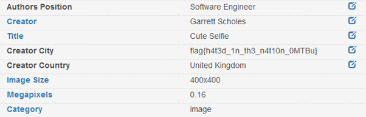
flag{h4t3d_1n_th3_n4t10n_0MTBu}
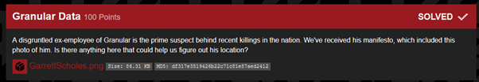
Zima Blue (Misc.)
After we downloaded the file, we could see something weird in the photos
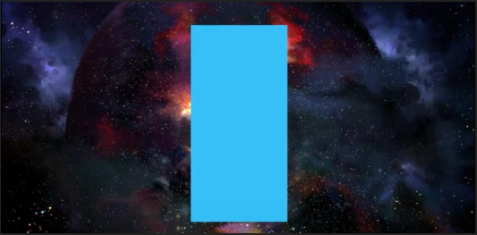
We could see a galaxy but being covered with weird blue rectangle, I tried to use the stegsolver to see whats behind the blue rectangle
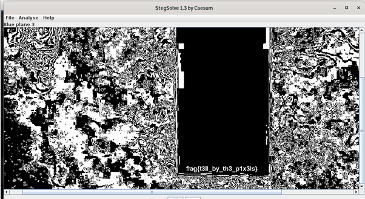
flag{t3ll_by_th3_p1x3ls}
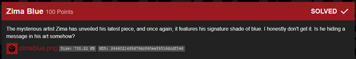
Dream Stealing (Misc.)
We could see from the downloaded file there is a cipher text,
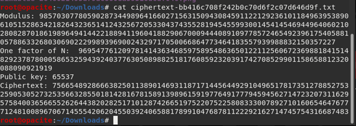
After I discuss with my friend who knows a lot of Cryptography, he said the content of ciphertext.txt is Classic RSA,
and then we using the python to code the decryption of the cipher.
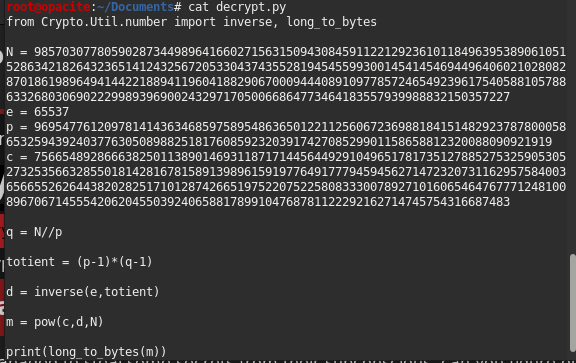
then after we run the python, we got the flag of the challenge.
flag{4cce551ng_th3_subc0nsc10us}
Echoes of Reality (Misc.)
We only got a audio file, and when we play the audio we got some beeping sound,
first I thought it was a beeping cipher but I don’t get the result,
so I thought again about sound and I think we have to analyze the sound because I thought it was about the frequency called spectogram.
and by using audacity, I could retrieve the flag
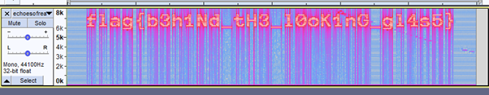
flag{b3h1nd_tH3_l0ok1nG_gl4s5}
Needle In A Haystack (Misc.)
we need to download the file, and after that we have to extract the file then we got 400 text file with some random string each file as a hay.
Its quite simple actually, we just need to run a command like this
“ls -l | grep -r “flag{“”. and voila! we got the flag!
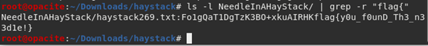
flag{y0u_f0unD_Th3_n33d1e!}
Troll Hunt (Misc.)
From the description of the challenge, we know there is a popular hashtag
#shrive and the first social media I went it
Twitter,
because the
hashtag popular on twitter.
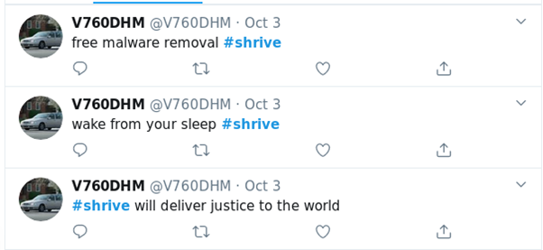
And we got the twitter account, I know it because of
the date of tweets almost as the starting time of CTF. After scrolling through his tweets, I got the link to imgur website
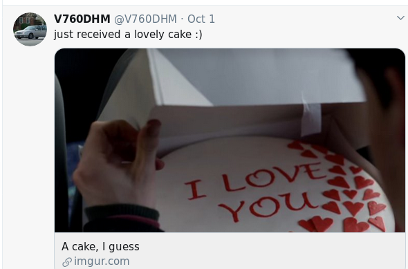
Then after open the link, I got the profile of V760DHM on imgur.com then after scrolling through that account I got the flag as shown below.
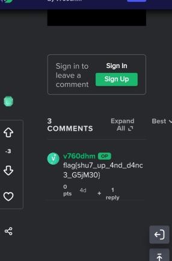
flag{shu7_up_4nd_d4nc3_G5jM30}
thats it folks, although I didn't managed to solved anymore than that, but I learn a lot from this CTF, Cheers to the organizer of this CTF!
thank you for reading this Writeup, cheers and bye!